Android 4.0
16. Preferences

This chapter
- 16.0 Preferences
- 16.1 Example A Preferences
- 16.2 Example B using PreferenceCategory and PreferenceScreen
- 16.3 Example C using Dialogs
- 16.4 Another example of using SharedPreferences
We'll introduce the simplest but most versatile data persistence technique in Android, SharedPreferences.
SharedPreferences are a simple, lightweight key/value pair mechanism for saving primitive application data, most commonly a user's application preferences.
Using the SharedPreferences class, we can create named maps of key/value pairs within our application that can be shared among application components running in the same application context.
SharedPreferences support the primitive types Boolean, string, float, long, and integer, making them an ideal means of quickly storing default values, class instance variables, the current UI state, and user preferences. They are most commonly used to persist data across user sessions and to share settings among application components.
How we get access to the preference?
- getPreference() from within Activity:
to access activity specific preference. - getSharedPreferences() from within Activity or other application Context:
to access application-level preference. - getDefaultSharedPreferences() on PreferencesManager
to get the shared preferences that work in concert with Android's overall preference framework.
getPreference() and getSharedPreferences() take a security mode parameter pass in 0. The getSharedPreferences() method also takes a name of a set of preferences. getPreference() effectively calls getSharedPreferences() with the activity's class name as the preference set name. The getDefaultSharedPreferences() method takes the Context for the preferences.
All of these methods return an instance of SharedPreferences, which offers a series of getters to access named preferences, returning a suitably typed result. The getters also take a default value, which is returned if there is no preference set under the specified key.
Given the appropriate SharedPreferences object, we can use edit() to get an editor for the preferences. This object has a set of setters that mirror the getters on the parent SharedPreferences object. It also has the following methods:
- remove(): Deletes a single named preference.
- clear(): Deletes all preferences.
- commit(): Persists our changes made via the editor.
The commit() method is important. If we modify preferences using the editor and fail to commit() the changes, those changes will evaporate once the editor goes out of scope.
Conversely, since the preferences object supports live changes, if one part of our application modifies shared preferences, another part of our application will have access to the changed value immediately.
We can describe our application's preferences in an XML file stored in project's res/xml/ directory. Android, then, present a UI for manipulating those preferences, which are then stored in the SharedPreferences which we get back from getDefaultSharedPreferences().
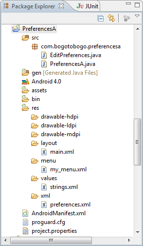
Here is the xml preferences, res/xml/preferences.xml used in this example.
<PreferenceScreen xmlns:android="http://schemas.android.com/apk/res/android">
<CheckBoxPreference
android:key="checkbox"
android:title="Checkbox Preference"
android:summary="Check it on, check it off" />
<RingtonePreference
android:key="ringtone"
android:title="Ringtone Preference"
android:showDefault="true"
android:showSilent="true"
android:summary="Pick a tone, any tone" />
</PreferenceScreen>
Note that the root of the preference XML is a PreferenceScreen element. Some of the things we can have inside a PreferenceScreen element are preference definitions. These are subclasses of RingtonePreference. These allow us to check a checkbox or choose a ringtone, respectively. In the case of RingtonePreference, we have the option of allowing users to choose the system default ringtone or to choose "silence" as a ringtone.
Once we have the preference XML, we can use built-in activity for allowing users to set their preferences. We do it by subclassing the activity and point it to our preference XML with the hook the activity into the rest of application.
Let's look at the EditPreferences activity of our example, EditPreferences.java:
package com.bogotobogo.preferencesa;
import android.os.Bundle;
import android.preference.PreferenceActivity;
public class EditPreferences extends PreferenceActivity {
@Override
public void onCreate(Bundle savedInstanceState) {
super.onCreate(savedInstanceState);
addPreferencesFromResource(R.xml.preferences);
}
}
What it's doing is just call addPreferencesFromResource() and specify the XML resource containing our preferences.
addPreferencesFromResource(R.xml.preferences);
We also need to add EditPreferences to our AndroidManifest.xml file:
<?xml version="1.0" encoding="utf-8"?> <manifest xmlns:android="http://schemas.android.com/apk/res/android" package="com.bogotobogo.preferencesa" android:versionCode="1" android:versionName="1.0" > <uses-sdk android:minSdkVersion="14" /> <application android:label="@string/app_name" android:icon="@drawable/cw"> <activity android:name=".PreferencesA" android:label="@string/app_name"> <intent-filter> <action android:name="android.intent.action.MAIN" /> <category android:name="android.intent.category.LAUNCHER" /> </intent-filter> </activity> <activity android:name=".EditPreferences" android:label="@string/app_name"> </activity> </application> </manifest>
strings.xml:
<?xml version="1.0" encoding="utf-8"?>
<resources>
<string name="hello">Hello World, PreferencesAActivity!</string>
<string name="app_name">PreferencesA</string>
<string name="checkbox">Checkbox:</string>
<string name="ringtone">Ringtone:</string>
</resources>
We also need to arrange to invoke the activity, such as from a menu option. Here is our Java code, PreferencesA.java:
package com.bogotobogo.preferencesa;
import android.app.Activity;
import android.content.Intent;
import android.content.SharedPreferences;
import android.os.Bundle;
import android.preference.PreferenceManager;
import android.view.Menu;
import android.view.MenuItem;
import android.widget.TextView;
public class PreferencesA extends Activity {
private static final int EDIT_ID = Menu.FIRST+2;
private TextView checkbox=null;
private TextView ringtone=null;
@Override
public void onCreate(Bundle savedInstanceState) {
super.onCreate(savedInstanceState);
setContentView(R.layout.main);
checkbox=(TextView)findViewById(R.id.checkbox);
ringtone=(TextView)findViewById(R.id.ringtone);
}
@Override
public void onResume() {
super.onResume();
SharedPreferences prefs=PreferenceManager
.getDefaultSharedPreferences(this);
checkbox.setText(new Boolean(prefs.getBoolean("checkbox", false)).toString());
ringtone.setText(prefs.getString("ringtone", ""));
}
@Override
public boolean onCreateOptionsMenu(Menu menu) {
menu.add(Menu.NONE, EDIT_ID, Menu.NONE, "Edit Prefs")
.setIcon(R.drawable.misc).setAlphabeticShortcut('e');
return(super.onCreateOptionsMenu(menu));
}
@Override
public boolean onOptionsItemSelected(MenuItem item) {
switch (item.getItemId()) {
case EDIT_ID:
startActivity(new Intent(this, EditPreferences.class));
return(true);
}
return(super.onOptionsItemSelected(item));
}
}
The first screen when the application started.
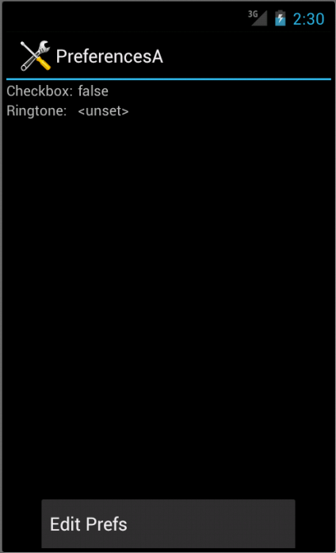
At the "Edit Prefs" button.
The check box can be directly checked or unchecked.
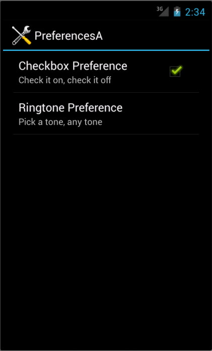
Editing Ringtone.
There is no explicit save or commit button or menu. Any changes are persisted as soon as they are made.
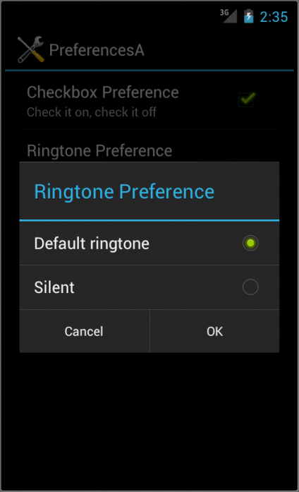
Saved preferences.
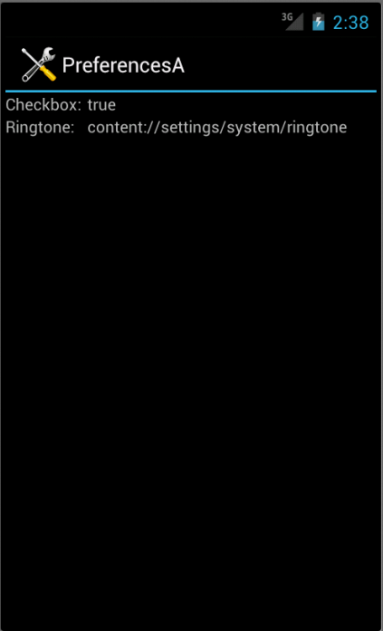
Files used in the example, PreferencesA.zip
If we have lots of preferences for users to set, putting them all in one big list may not be the good idea. Android's preference framework gives us a few other ways to impose a bit of structure on our preferences including categories and screens.
Categories are added via a PreferenceCategory element in our preference XML and are used to group together related preferences. Rather than have our preferences all as children of the root PreferenceScreen, we can place a few PreferenceCategory elements in the PreferenceScreen, and the put our preferences in their appropriate categories. Visually, this adds a divider with the category title between groups of preferences.
If we have lots of preferences, we can also put them on separate screens by introducing the PreferenceScreen element.
Any children of PreferenceScreen go on their own screen. If we nest PreferenceScreens, the parent screen displays the screen as a placeholder entry, and tapping that entry brings up the child screen.
In our example, the preference XML file contains both PreferenceCategory and PreferenceScreen elements. Also, unlike the previous example, we used Action Bar for the Preference Edit.
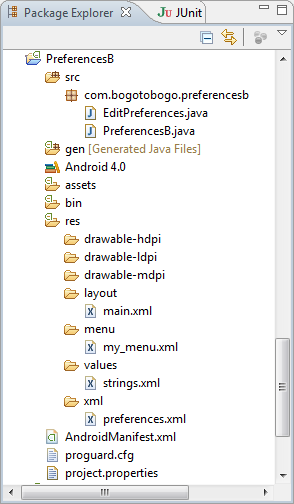
res/memu/my_menu.xml:
<?xml version="1.0" encoding="utf-8"?>
<menu xmlns:android="http://schemas.android.com/apk/res/android">
<item android:id="@+id/edit_pref"
android:icon="@drawable/misc"
android:showAsAction="ifRoom|withText"
android:title="@string/edit_pref" />
</menu>
strings.xml:
<?xml version="1.0" encoding="utf-8"?> <resources> <string name="app_name">PreferencesB</string> <string name="checkbox">Checkbox:</string> <string name="ringtone">Ringtone:</string> <string name="checkbox2">Checkbox #2:</string> <string name="edit_pref">Edit Preferences</string> </resources>
PreferencesB Manifest.xml, AndroidManifest.xml:
<?xml version="1.0" encoding="utf-8"?>
<manifest xmlns:android="http://schemas.android.com/apk/res/android"
package="com.bogotobogo.preferencesb"
android:versionCode="1"
android:versionName="1.0" >
<uses-sdk android:minSdkVersion="14" />
<application
android:icon="@drawable/cw"
android:label="@string/app_name" >
<activity
android:name=".PreferencesB"
android:label="@string/app_name" >
<intent-filter>
<action android:name="android.intent.action.MAIN" />
<category android:name="android.intent.category.LAUNCHER" />
</intent-filter>
</activity>
<activity
android:name=".EditPreferences"
android:label="@string/app_name">
</activity>
</application>
</manifest>
Here is our new file, res/xml/preferences.xml.
<PreferenceScreen xmlns:android="http://schemas.android.com/apk/res/android"> <PreferenceCategory android:title="Simple Preferences"> <CheckBoxPreference android:key="checkbox" android:title="Checkbox Preference" android:summary="Check it on, check it off"/> <RingtonePreference android:key="ringtone" android:title="Ringtone Preference" android:showDefault="true" android:showSilent="true" android:summary="Pick a tone, any tone"/> </PreferenceCategory> <PreferenceCategory android:title="Detail Screens"> <PreferenceScreen android:key="detail" android:title="Detail Screen" android:summary="Additional preferences held in another page"> <CheckBoxPreference android:key="checkbox2" android:title="Another Checkbox" android:summary="On. Off. It really doesn't matter."/> </PreferenceScreen> </PreferenceCategory> </PreferenceScreen>
PreferencesB.java:
package com.bogotobogo.preferencesb;
import android.app.Activity;
import android.content.Intent;
import android.content.SharedPreferences;
import android.os.Bundle;
import android.preference.PreferenceManager;
import android.view.Menu;
import android.view.MenuInflater;
import android.view.MenuItem;
import android.widget.TextView;
public class PreferencesB extends Activity {
private TextView checkbox=null;
private TextView ringtone=null;
private TextView checkbox2=null;
@Override
public void onCreate(Bundle savedInstanceState) {
super.onCreate(savedInstanceState);
setContentView(R.layout.main);
checkbox=(TextView)findViewById(R.id.checkbox);
ringtone=(TextView)findViewById(R.id.ringtone);
checkbox2=(TextView)findViewById(R.id.checkbox2);
}
@Override
public void onResume() {
super.onResume();
SharedPreferences prefs=PreferenceManager
.getDefaultSharedPreferences(this);
checkbox.setText(new Boolean(prefs.getBoolean("checkbox", false))
.toString());
ringtone.setText(prefs.getString("ringtone", "<unset>"));
checkbox2.setText(new Boolean(prefs.getBoolean("checkbox2", false))
.toString());
}
@Override
public boolean onCreateOptionsMenu(Menu menu) {
MenuInflater inflater = getMenuInflater();
inflater.inflate(R.menu.my_menu, menu);
return true;
}
@Override
public boolean onOptionsItemSelected(MenuItem item) {
switch (item.getItemId()) {
case R.id.edit_pref:
startActivity(new Intent(this, EditPreferences.class));
return true;
}
return(super.onOptionsItemSelected(item));
}
}
EditPreferences.java:
package com.bogotobogo.preferencesb;
import android.os.Bundle;
import android.preference.PreferenceActivity;
public class EditPreferences extends PreferenceActivity {
@Override
public void onCreate(Bundle savedInstanceState) {
super.onCreate(savedInstanceState);
addPreferencesFromResource(R.xml.preferences);
}
}
Initial screen.
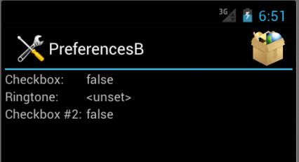
At Edit Button, we see categorized list of elements as a result of using preference XML with PreferenceActivity implementation.
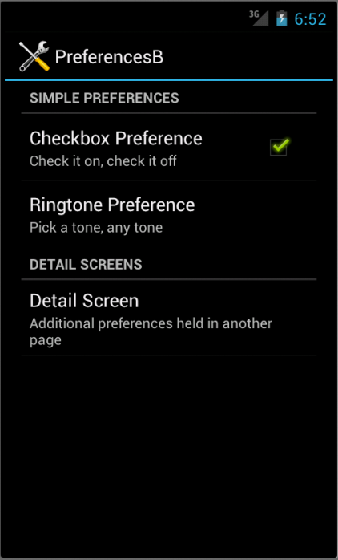
If we tap the Detail Screen entry, we are taken to the child preference screen.
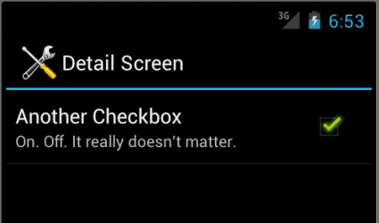
Files used in the example, PreferencesB.zip
Not all preferences are check box and ringtones. For other preferences such as entry fields and lists, Android uses popup dialogs. Users do not enter their preference directly into the preference UI activity. They tap a preference, fill in a value, and click OK to commit the change.
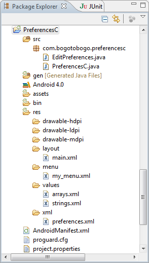
Structurally, in the preference XML, fields and lists are not significantly different from other preference types.
Here is the file, res/xml/preferences.xml.
<PreferenceScreen xmlns:android="http://schemas.android.com/apk/res/android"> <PreferenceCategory android:title="Simple Preferences"> <CheckBoxPreference android:key="checkbox" android:title="Checkbox Preference" android:summary="Check it on, check it off"/> <RingtonePreference android:key="ringtone" android:title="Ringtone Preference" android:showDefault="true" android:showSilent="true" android:summary="Pick a tone, any tone"/> </PreferenceCategory> <PreferenceCategory android:title="Detail Screens"> <PreferenceScreen android:key="detail" android:title="Detail Screen" android:summary="Additional preferences held in another page"> <CheckBoxPreference android:key="checkbox2" android:title="Another Checkbox" android:summary="On. Off. It really doesn't matter."/> </PreferenceScreen> </PreferenceCategory> <PreferenceCategory android:title="Other Preferences"> <EditTextPreference android:key="text" android:title="Text Entry Dialog" android:summary="Click to pop up a field for entry" android:dialogTitle="Enter something useful"/> <ListPreference android:key="list" android:title="Selection Dialog" android:summary="Click to pop up a list to choose from" android:entries="@array/cities" android:entryValues="@array/airport_codes" android:dialogTitle="Choose a California city" /> </PreferenceCategory> </PreferenceScreen>
With <EditTextPreference>, in addition to the title and summary we put on the preference itself, we can also supply the title to use for the dialog.
With <ListPreferenc>, we supply both a dialog title and two string-array resources: one for the display names and one for the values. These need to be in the same order, because the index of the chosen display name determines which value is stored as the preference in the SharedPreferences.
Here are the arrays. res/values/arrays.xml for use by the ListPreference.
<?xml version="1.0" encoding="utf-8"?> <resources> <string-array name="cities"> <item>Fresno</item> <item>Santa Ana</item> <item>San Jose</item> <item>Long Beach</item> <item>Los Angeles</item> <item>Monterey</item> <item>San Francisco</item> <item>Santa Barbara</item> <item>San Diego</item> </string-array> <string-array name="airport_codes"> <item>FYI</item> <item>SNA</item> <item>SJC</item> <item>LGB</item> <item>LAX</item> <item>MRY</item> <item>SFO</item> <item>SBA</item> <item>SAN</item> </string-array> </resources>
strings.xml:
<?xml version="1.0" encoding="utf-8"?> <resources> <string name="app_name">PreferencesC</string> <string name="checkbox">Checkbox:</string> <string name="ringtone">Ringtone:</string> <string name="checkbox2">Checkbox #2:</string> <string name="edit_pref">Edit Preferences</string> <string name="text">Text:</string> <string name="list">List Selection:</string> </resources>
main.xml:
<?xml version="1.0" encoding="utf-8"?>
<TableLayout
xmlns:android="http://schemas.android.com/apk/res/android"
android:layout_width="fill_parent"
android:layout_height="fill_parent">
<TableRow>
<TextView
android:text="@string/checkbox"
android:paddingRight="5dp" />
<TextView
android:id="@+id/checkbox" />
</TableRow>
<TableRow>
<TextView
android:text="@string/ringtone"
android:paddingRight="5dp" />
<TextView
android:id="@+id/ringtone" />
</TableRow>s
<TableRow>
<TextView
android:text="@string/checkbox2"
android:paddingRight="5dp" />
<TextView
android:id="@+id/checkbox2" />
</TableRow>
<TableRow>
<TextView
android:text="@string/text"
android:paddingRight="5dp" />
<TextView android:id="@+id/text" />
</TableRow>
<TableRow>
<TextView
android:text="@string/list"
android:paddingRight="5dp" />
<TextView
android:id="@+id/list" />
</TableRow>
</TableLayout>
AndroidManifest.xml:
<?xml version="1.0" encoding="utf-8"?>
<manifest
xmlns:android="http://schemas.android.com/apk/res/android"
package="com.bogotobogo.preferencesc"
android:versionCode="1"
android:versionName="1.0" >
<uses-sdk android:minSdkVersion="14" />
<application
android:icon="@drawable/cw"
android:label="@string/app_name" >
<activity
android:name=".PreferencesC"
android:label="@string/app_name" >
<intent-filter>
<action android:name="android.intent.action.MAIN" />
<category android:name="android.intent.category.LAUNCHER" />
</intent-filter>
</activity>
<activity
android:name=".EditPreferences"
android:label="@string/app_name">
</activity>
</application>
</manifest>
my_menu.xml:
<?xml version="1.0" encoding="utf-8"?>
<menu
xmlns:android="http://schemas.android.com/apk/res/android">
<item android:id="@+id/edit_pref"
android:icon="@drawable/misc"
android:showAsAction="ifRoom|withText"
android:title="@string/edit_pref" />
</menu>
PreferencesC.java:
package com.bogotobogo.preferencesc;
import android.app.Activity;
import android.content.Intent;
import android.content.SharedPreferences;
import android.os.Bundle;
import android.preference.PreferenceManager;
import android.view.Menu;
import android.view.MenuInflater;
import android.view.MenuItem;
import android.widget.TextView;
public class PreferencesC extends Activity {
private TextView checkbox=null;
private TextView ringtone=null;
private TextView checkbox2=null;
private TextView text=null;
private TextView list=null;
@Override
public void onCreate(Bundle savedInstanceState) {
super.onCreate(savedInstanceState);
setContentView(R.layout.main);
checkbox=(TextView)findViewById(R.id.checkbox);
ringtone=(TextView)findViewById(R.id.ringtone);
checkbox2=(TextView)findViewById(R.id.checkbox2);
text=(TextView)findViewById(R.id.text);
list=(TextView)findViewById(R.id.list);
}
@Override
public void onResume() {
super.onResume();
SharedPreferences prefs=PreferenceManager
.getDefaultSharedPreferences(this);
checkbox.setText(new Boolean(prefs.getBoolean("checkbox", false))
.toString());
ringtone.setText(prefs.getString("ringtone", "<unset>"));
checkbox2.setText(new Boolean(prefs.getBoolean("checkbox2", false))
.toString());
text.setText(prefs.getString("text", "<unset>"));
list.setText(prefs.getString("list", "<unset>"));
}
@Override
public boolean onCreateOptionsMenu(Menu menu) {
MenuInflater inflater = getMenuInflater();
inflater.inflate(R.menu.my_menu, menu);
return true;
}
@Override
public boolean onOptionsItemSelected(MenuItem item) {
switch (item.getItemId()) {
case R.id.edit_pref:
startActivity(new Intent(this, EditPreferences.class));
return true;
}
return(super.onOptionsItemSelected(item));
}
}
EditPreferences.java:
package com.bogotobogo.preferencesc;
import android.os.Bundle;
import android.preference.PreferenceActivity;
public class EditPreferences extends PreferenceActivity {
@Override
public void onCreate(Bundle savedInstanceState) {
super.onCreate(savedInstanceState);
addPreferencesFromResource(R.xml.preferences);
}
}
Initial screen.

At Edit Button, we have the preference UI starting with another category with another pair of preference entries.
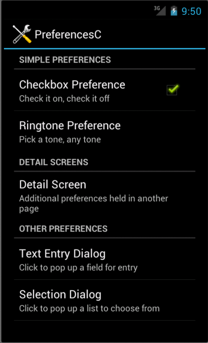
If we tap the Text Entry Dialog, we'll have text-entry dialog with the prior preference entry already filled in.
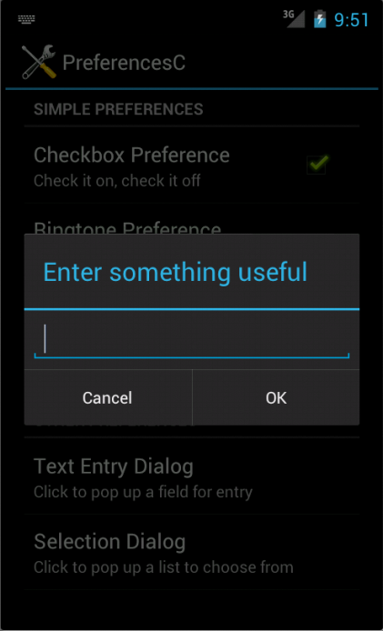
Tapping on Selection Dialog will bring up a selection dialog showing names of cities from the array, res/values/arrays.xml.
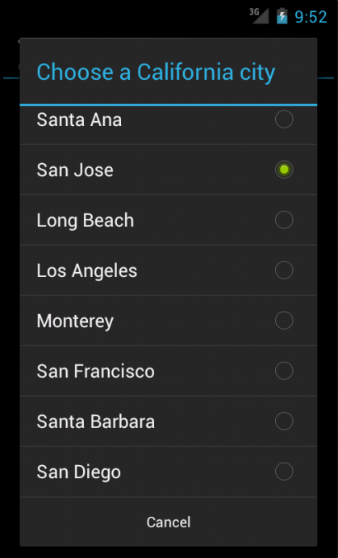
Files used in the example, PreferencesC.zip
Unlike the previous examples, this one is a little bit more complicated.
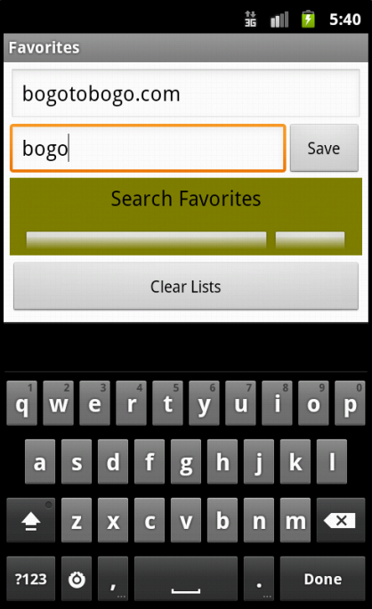
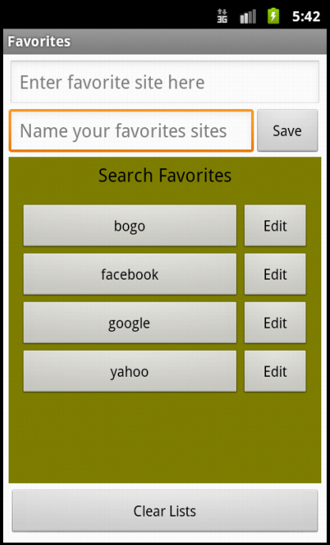
The application is making a list of favorite web addresses. We store the pair of key/value
(for example,
www.facebook.com/facebook, http://developer.android.com/resources/dashboard/platform-versions.html/android platforms etc.) into savedSiteList file.
To read the key/value pairs from this file, we use SharedPreferences objects. Then, to modify the file's contents, we use SharedPreferences.Editor objects.
Because the amount of data being loaded is small, we read in the saved list from the Activity's onCreate() method. In other words, it is called from out main thread, UI thread, which is OK since the light weight of the data file.
Another key feature of this example is Intent. Intent is used to launch an appropriate activity. It tells OS an action to take and the data on which that action is to be acted upon. For example, when we touch a search button, application creates a url that contains the query string. Then, we load the url into a web browser by creating a new intent for viewing the url, then passing that intent to the startActivity() method.
Let's look into more details regarding the feature of this example by reviewing the packages to be imported.
- java.util.Arrays - This is needed to sort out the list alphabetically.
- android.app.AlertDialog - Used to display dialogs. Actually, in this example, the user required to enter both a url and a name for it. If one of them is empty, we want to display a message to the user. Also, when the user tries to delete all the entries of the list by pressing ClearList button, we want the user to confirm by displaying an AlertDialog.
- android.content.Context - This allows us to access several Android services and this provides access to information about the environment in which our app is running. For example, when we load UI dynamically, we'll be using a constant from this class with a LayoutInflater.
- android.content.DialogInterface - This contains the nested interface OnClickListener which we implement to handle the events when the user touches a AlertDialog button.
- android.content.Intent - This specifies an action to take and the data to be acted upon.
- android.content.SharedPreferences - This is used to manipulate key/value pairs that are stored in files.
- android.net.Uri - This is used to convert a url into the format that can be understood by an Intent that launches web browser.
- android.view.LayoutInflater - This is used to inflate an XML layout to programmatically create the components of UI. This is used when the user adds another row of buttons (name of url button and Edit button) to UI.
- android.view.inputmethod.InputMethodManager - In our example, when the user saves the entry of list, this enables us to hide the soft keyboard.
- android.view.View.OnClickListener - This is to specify the code to be executed when the user pressed a button.
We use TableLayout with five TableRows as shown in the main.xml below.
<?xml version="1.0" encoding="utf-8"?>
<TableLayout xmlns:android="http://schemas.android.com/apk/res/android"
android:id="@+id/tableLayout"
android:layout_width="match_parent"
android:layout_height="match_parent"
android:padding="5dp"
android:stretchColumns="*"
android:background="@android:color/white">
<!-- tableRow0 -->
<TableRow android:id="@+id/tableRow0"
android:layout_height="wrap_content"
android:layout_width="match_parent">
<EditText android:layout_width="match_parent"
android:layout_height="wrap_content"
android:layout_span="2"
android:inputType="text"
android:id="@+id/urlEditText"
android:hint="@string/favoritesPrompt"
android:imeOptions="actionNext">
</EditText>
</TableRow>
<!-- tableRow1 -->
<TableRow android:id="@+id/tableRow1"
android:layout_height="wrap_content"
android:layout_width="match_parent">
<EditText android:layout_height="wrap_content"
android:hint="@string/listPrompt"
android:inputType="text"
android:id="@+id/listEditText"
android:imeOptions="actionDone"
android:layout_gravity="center_vertical">
</EditText>
<Button android:id="@+id/saveButton"
android:layout_height="wrap_content"
android:layout_width="wrap_content"
android:layout_gravity="center_vertical"
android:text="@string/save">
</Button>
</TableRow>
<!-- tableRow2 -->
<TableRow android:id="@+id/tableRow2"
android:layout_height="wrap_content"
android:layout_width="match_parent"
android:background="@color/olive">
<TextView android:layout_height="wrap_content"
android:id="@+id/listedSearchesTextView"
android:text="@string/listedSearches"
android:layout_width="match_parent"
android:layout_gravity="center_horizontal"
android:layout_span="2"
android:textSize="18sp"
android:textColor="@android:color/black"
android:padding="5dp">
</TextView>
</TableRow>
<!-- tableRow3 -->
<TableRow android:id="@+id/tableRow3"
android:background="@color/olive"
android:layout_height="wrap_content"
android:layout_width="match_parent"
android:layout_weight="1">
<ScrollView android:id="@+id/listScrollView"
android:layout_width="match_parent"
android:layout_span="2"
android:padding="5dp">
<TableLayout android:id="@+id/listTableLayout"
android:layout_width="match_parent"
android:layout_height="wrap_content"
android:padding="5dp"
android:stretchColumns="*">
</TableLayout>
</ScrollView>
</TableRow>
<!-- tableRow4 -->
<TableRow android:id="@+id/tableRow4"
android:layout_height="wrap_content"
android:layout_width="match_parent">
<Button android:layout_width="wrap_content"
android:layout_height="wrap_content"
android:text="@string/clearLists"
android:id="@+id/clearListsButton"
android:layout_span="2"
android:layout_marginTop="5dp">
</Button>
</TableRow>
</TableLayout>
How to put the TableRow into the TableLayout using Outline window was explained in another chapter, Mortgage Calculator.
The picture below is the Layout on Outline window.
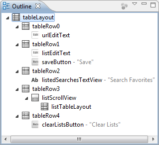The "*" in android:stretchColumns="*" tells that all of the columns are stretchable. In other words, they can expand to the full width of the screen. All the layout_span is set to 2 except the TableRow 1 where we need to put 2 widgets: EditText as well as a Button. The android:hint attributes of the each EditText helps the user understand the intent of the EditText. The android:imeOptions enables us to configure options for the current input method. For instance, when urlEditText has the focus and the soft keyboard is displayed, the keyboard contains a Next button which was specified with the android:imeOptions attribute value actionNext so that when the user touches this button, the focus can be moved to the next component that can accept text input, in this case, listEditText.
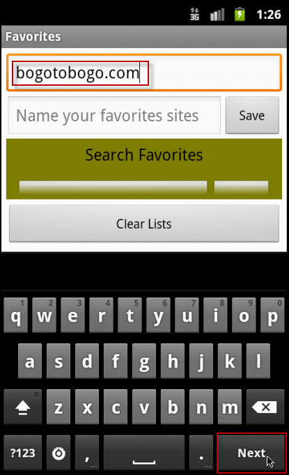When listEditText has the focus, the soft keyboard contains a Done button which was specified with the android:imeOptions attribute value actionDone. If the user touches this button, the system hides the softkeyboard.
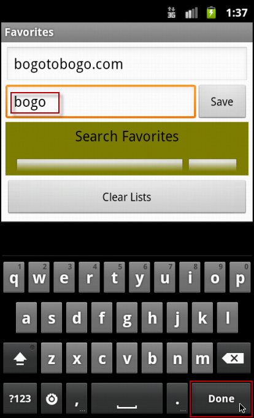Note the line android:layout_weight="1" of tableRow 3, which make it more important than other rows when it comes to resizing.
We're adding two new buttons when the user touches Save button.
<?xml version="1.0" encoding="UTF-8"?>
<TableRow xmlns:android="http://schemas.android.com/apk/res/android"
android:id="@+id/newListTableRow"
android:layout_width="match_parent"
android:layout_height="wrap_content"
android:background="@android:color/transparent">
<Button android:id="@+id/newListButton"
android:layout_width="@dimen/listButtonWidth"
android:layout_height="wrap_content">
</Button>
<Button android:id="@+id/newEditButton"
android:layout_width="@dimen/editButtonWidth"
android:layout_height="wrap_content"
android:text="@string/edit">
</Button>
</TableRow>
Note couple of things in the new_list_view.xml. We set the background color, android:background, to android:color/transparent to see through the tableRow 3's color. Also note that we used @dimen to specify the width of the Buttons.
Here is the code for our only Favorites Activity.
package com.bogotobogo.favorites;
import java.util.Arrays;
import android.app.Activity;
import android.app.AlertDialog;
import android.content.Context;
import android.content.DialogInterface;
import android.content.Intent;
import android.content.SharedPreferences;
import android.net.Uri;
import android.os.Bundle;
import android.view.LayoutInflater;
import android.view.View;
import android.view.View.OnClickListener;
import android.view.inputmethod.InputMethodManager;
import android.widget.Button;
import android.widget.EditText;
import android.widget.TableLayout;
import android.widget.TableRow;
// main Activity class for the Favorite app
public class Favorites extends Activity
{
private EditText urlEditText; // where the user enters url
private EditText listEditText; // where the user enters a name for the url
private SharedPreferences savedSiteList; // user's favorite sites
private TableLayout listTableLayout; // shows the search buttons
// called when the activity is first created
@Override
public void onCreate(Bundle savedInstanceState)
{
super.onCreate(savedInstanceState); // call the superclass version
setContentView(R.layout.main); // set the layout
// get the SharedPreferences that contains the user's saved searches
savedSiteList = getSharedPreferences("searches", MODE_PRIVATE);
// get a reference to the listTableLayout
listTableLayout =
(TableLayout) findViewById(R.id.listTableLayout);
// get references to the two EditTexts
urlEditText = (EditText) findViewById(R.id.urlEditText);
listEditText = (EditText) findViewById(R.id.listEditText);
// register listeners for the Save and Clear Lists Buttons
Button saveButton = (Button) findViewById(R.id.saveButton);
saveButton.setOnClickListener(saveButtonListener);
Button clearListsButton =
(Button) findViewById(R.id.clearListsButton);
clearListsButton.setOnClickListener(clearListsButtonListener);
reloadButtons(null); // add previously saved searches to UI
}
// recreates search site name and edit Buttons for all saved searches;
// passes null to create all the site name and edit Buttons.
private void reloadButtons(String newList)
{
// store saved url/site names in the lists array
String[] lists =
savedSiteList.getAll().keySet().toArray(new String[0]);
Arrays.sort(lists, String.CASE_INSENSITIVE_ORDER); // sort by list
// if a new list was added, insert in GUI at the appropriate location
if (newList != null)
{
makeListGUI(newList, Arrays.binarySearch(lists, newList));
}
else // display GUI for all lists
{
// display all saved searches
for (int index = 0; index < lists.length; ++index)
makeListGUI(lists[index], index);
}
}
// add new search to the save file, then reload all Buttons
private void makeList(String url, String site_name)
{
// originalSiteList will be null if we're modifying an existing search
String originalSiteList = savedSiteList.getString(site_name, null);
// get a SharedPreferences.Editor to store new url/site name pair
SharedPreferences.Editor preferencesEditor = savedSiteList.edit();
preferencesEditor.putString(site_name, url); // store current search
preferencesEditor.apply(); // store the updated preferences
// if this is a new site name, add its GUI
if (originalSiteList == null)
reloadButtons(site_name); // adds a new button for this list
}
// add a new list button and corresponding edit button to the GUI
private void makeListGUI(String list, int index)
{
// get a reference to the LayoutInflater service
LayoutInflater inflater = (LayoutInflater) getSystemService(
Context.LAYOUT_INFLATER_SERVICE);
// inflate new_list_view.xml to create new list and edit Buttons
View newListView = inflater.inflate(R.layout.new_list_view, null);
// get newListButton, set its text and register its listener
Button newListButton =
(Button) newListView.findViewById(R.id.newListButton);
newListButton.setText(list);
newListButton.setOnClickListener(listButtonListener);
// get newEditButton and register its listener
Button newEditButton =
(Button) newListView.findViewById(R.id.newEditButton);
newEditButton.setOnClickListener(editButtonListener);
// add new list and edit buttons to listTableLayout
listTableLayout.addView(newListView, index);
}
// remove all saved search Buttons from the app
private void clearButtons()
{
// remove all saved search Buttons
listTableLayout.removeAllViews();
}
// create a new Button and add it to the ScrollView
public OnClickListener saveButtonListener = new OnClickListener()
{
@Override
public void onClick(View v)
{
// create list if both urlEditText and listEditText are not empty
if (urlEditText.getText().length() > 0 &&
listEditText.getText().length() > 0)
{
makeList(urlEditText.getText().toString(),
listEditText.getText().toString());
urlEditText.setText(""); // clear urlEditText
listEditText.setText(""); // clear listEditText
// hide the soft keyboard
((InputMethodManager) getSystemService(
Context.INPUT_METHOD_SERVICE)).hideSoftInputFromWindow(
listEditText.getWindowToken(), 0);
}
else // display message asking user to provide a site_name and a url
{
// create a new AlertDialog Builder
AlertDialog.Builder builder =
new AlertDialog.Builder(Favorites.this);
builder.setTitle(R.string.missingTitle); // title bar string
// provide an OK button that simply dismisses the dialog
builder.setPositiveButton(R.string.OK, null);
// set the message to display
builder.setMessage(R.string.missingMessage);
// create AlertDialog from the AlertDialog.Builder
AlertDialog errorDialog = builder.create();
errorDialog.show(); // display the Dialog
}
}
};
// clears all saved searches
public OnClickListener clearListsButtonListener = new OnClickListener()
{
@Override
public void onClick(View v)
{
// create a new AlertDialog Builder
AlertDialog.Builder builder =
new AlertDialog.Builder(Favorites.this);
builder.setTitle(R.string.confirmTitle); // title bar string
// provide an OK button that simply dismisses the dialog
builder.setPositiveButton(R.string.erase,
new DialogInterface.OnClickListener()
{
@Override
public void onClick(DialogInterface dialog, int button)
{
clearButtons(); // clear all saved searches from the map
// get a SharedPreferences.Editor to clear searches
SharedPreferences.Editor preferencesEditor =
savedSiteList.edit();
preferencesEditor.clear(); // remove all url name/site_name pairs
preferencesEditor.apply(); // the changes
}
}
);
builder.setCancelable(true);
builder.setNegativeButton(R.string.cancel, null);
// set the message to display
builder.setMessage(R.string.confirmMessage);
// create AlertDialog from the AlertDialog.Builder
AlertDialog confirmDialog = builder.create();
confirmDialog.show(); // display the Dialog
}
};
// load selected search in a web browser
public OnClickListener listButtonListener = new OnClickListener()
{
@Override
public void onClick(View v)
{
// get the url
String buttonText = ((Button)v).getText().toString();
String url = savedSiteList.getString(buttonText, "");
// create the URL corresponding to the touched Button's site name
String urlString = getString(R.string.searchURL) + url;
// create an Intent to launch a web browser
Intent webIntent = new Intent(Intent.ACTION_VIEW,
Uri.parse(urlString));
startActivity(webIntent); // execute the Intent
}
};
// edit selected search
public OnClickListener editButtonListener = new OnClickListener()
{
@Override
public void onClick(View v)
{
// get all necessary GUI components
TableRow buttonTableRow = (TableRow) v.getParent();
Button searchButton =
(Button) buttonTableRow.findViewById(R.id.newListButton);
String list = searchButton.getText().toString();
// set EditTexts to match the chosen url and site_name
listEditText.setText(list);
urlEditText.setText(savedSiteList.getString(list, ""));
}
};
}
The onCreate() method is called in the following cases:
- when loading an app
- when an app is restored after killed while it was in the background
- configuration change
The getSharedPreferences() method is used to get a SharedPreferences object so that we can read url/site_name pairs from the previously stored "searches" file. The 2nd argument is the specification of accessibility of the file, and it has the following options:
- MODE_PRIVATE
accessible only to this app. Typically, we use this option. - MODE_WORLD_READABLE
Any app on the device can read from the file. - MODE_WORLD_WRITABLE
Any app on the device can write to the file.
The reloadButtons() method creates and shows new site_name and edit buttons. When its arguent is not null, is does it for a newly saved site, and when its argument is null, it does it for all saved sites.
private void reloadButtons(String newList)
{
// store saved url/url names in the lists array
String[] lists =
savedSiteList.getAll().keySet().toArray(new String[0]);
Arrays.sort(lists, String.CASE_INSENSITIVE_ORDER); // sort by list
...
We sort our list in alphabetical order. We get an array of key Strings from sharedPreferences object. The getAll() method returns a key/value pair Map. Then, the keySet() get a Set of all the keys. We call toArray() to convert the Set into an array of Strings. The Arrays.sort() sorts this with CASE_INSENSITIVE_ORDER.
// add new search to the save file, then reload all Buttons
private void makeList(String url, String site_name)
{
// originalSiteList will be null if we're modifying an existing search
String originalSiteList = savedSiteList.getString(site_name, null);
// get a SharedPreferences.Editor to store new url/site name pair
SharedPreferences.Editor preferencesEditor = savedSiteList.edit();
preferencesEditor.putString(site_name, url); // store current search
preferencesEditor.apply(); // store the updated preferences
// if this is a new site name, add its GUI
if (originalSiteList == null)
reloadButtons(site_name); // adds a new button for this list
}
The method makeList() adds a new site to savedSiteList or modifies an existing list. To look up the previous value associated with site_name, the getString() method is used. If the site_name is not in the file the 2nd arg is returned, in this case, it's null. So, it's new, and need to be added to the UI.
To modify the file associated with a SharedPreferences object, we should call edit() method to get a Editor preferencesEditor object:
SharedPreferences.Editor preferencesEditor = savedSiteList.edit();
The object enables us to add key/value pairs to, remove key/value pairs from, and modify the value associated with a specific key in a SharedPreferences file.
The following line of code calls putString() method to save the new site_name (key) and its url (value).
preferencesEditor.putString(site_name, url);
Then, then next line finalize it, making changes to the "searches" file by calling apply() method.
The makeListGUI() method adds one new row to the listTableLayout. That row contains a site_name and an Edit button. This is done by inflating the xml, new_list_view.xml which has a newListTableRow which contains newListButton and newEditButton:
<?xml version="1.0" encoding="UTF-8"?> <TableRow xmlns:android="http://schemas.android.com/apk/res/android" android:id="@+id/newListTableRow" ... <Button android:id="@+id/newListButton" ... <Button android:id="@+id/newEditButton" ... </TableRow>
To inflate the layout, we use a service. To do that, we need to obtain a reference to the service by calling the getSystemService() method. Because this can return references to several system services, we should cast the result to type LayoutInflater:
LayoutInflater inflater = (LayoutInflater) getSystemService(
Context.LAYOUT_INFLATER_SERVICE);
After inflating layout using R.layout.new_list_view, the following line returns a reference to a View. This is the TableRow that contains the two Buttons:
// inflate new_list_view.xml to create new list and edit Buttons View newListView = inflater.inflate(R.layout.new_list_view, null);
The last line of the makeListGUI() method adds the newListView to the listTableLayout at the specified index.
Let's look at the anonymous inner-class object listButtonListener. It implements interface OnClickListener. We already registered this listButtonListener object as the event handler object for the newListButton.
The following line of code creates a new Intent which will be used to launch a web browser and display corresponding web site. The first argument passed to Intent's constructor is a constant describing the action. In our case, it is Intent.ACTION_VIEW. The second argument is a uri to the data on which we wish to perform the action.
// create an Intent to launch a web browser
Intent webIntent = new Intent(Intent.ACTION_VIEW,
Uri.parse(urlString));
The startActivity() takes the Intent as an argument. The startActivity() strats the appropriate Activity to perform the particular action on the given data. Note that we did not specify a component to display the web page but instead allowed the system to launch the appropriate Activity based on the type of data. This is called implicit Intent.
If multiple activities can handle the action and the startActivity() get the data, the system displays a dialog which gives user the choice of activities. However, if the system cannot find an activity to handle the action, then the startActivity() throws an exception called ActivityNotFoundException.
Regarding the Intent, let look at the intent-filter element in the AndroidManifest.xml file:
<application
...
<activity
...
<intent-filter>
<action android:name="android.intent.action.MAIN" />
<category android:name="android.intent.category.LAUNCHER" />
</intent-filter>
</activity>
</application>
The intent-filter element specifies the types of intents the Activity can respond to.
"android.intent.action.MAIN"tells that this is the app's main activity. In other words, it is the one that is displayed when the app is launched. The category element specifies the type of Android component that handles the event. In our example, it tells that this activity must be listed in the application launcher with other apps on the device.
Files used in this project are in Favorites.zip
Ph.D. / Golden Gate Ave, San Francisco / Seoul National Univ / Carnegie Mellon / UC Berkeley / DevOps / Deep Learning / Visualization